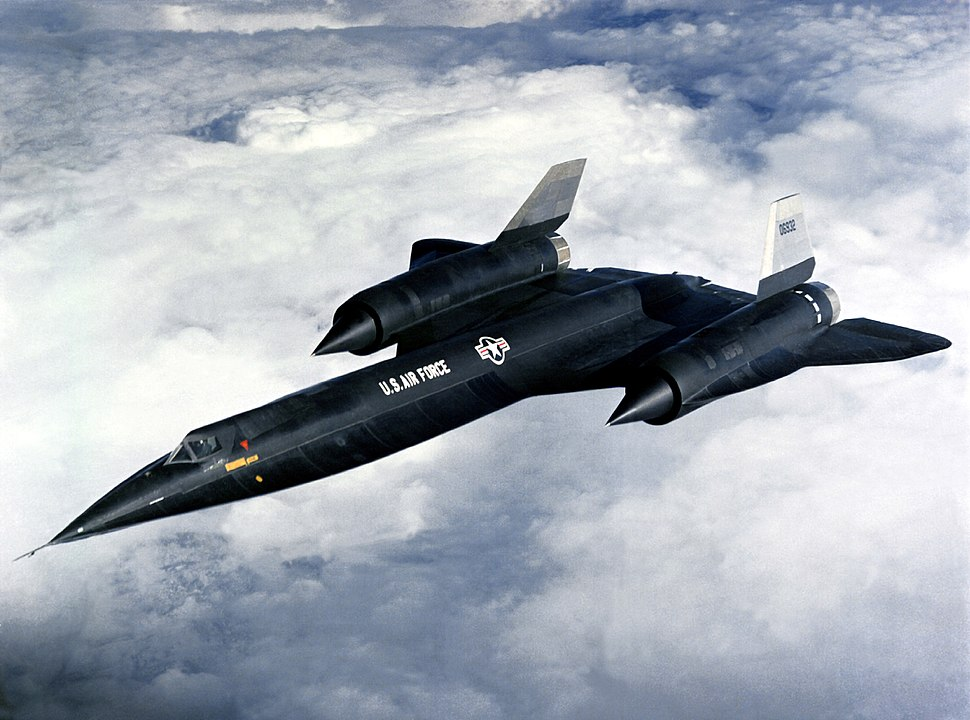

The Lockheed A-12 was a high-altitude, Mach 3+ reconnaissance aircraft built for the United States Central Intelligence Agency (CIA) by Lockheed's Skunk Works, based on the designs of Clarence "Kelly" Johnson.
The aircraft was designated A-12, the 12th in a series of internal design efforts for "Archangel", the aircraft's internal code name. In 1959, it was selected over Convair's FISH and Kingfish designs as the winner of Project GUSTO, and was developed and operated under Project Oxcart.
The CIA's representatives initially favored Convair's design for its smaller radar cross-section, but the A-12's specifications were slightly better and its projected cost was much lower. The companies' respective track records proved decisive. Convair's work on the B-58 had been plagued with delays and cost overruns, whereas Lockheed had produced the U-2 on time and under budget. In addition, Lockheed had experience running a "black" project.